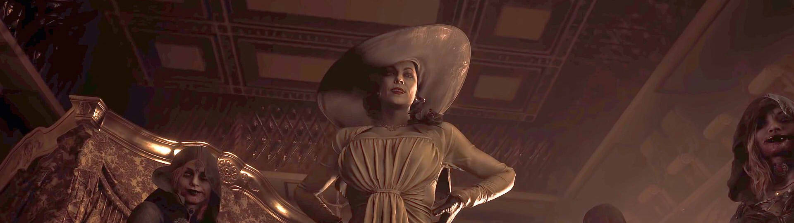
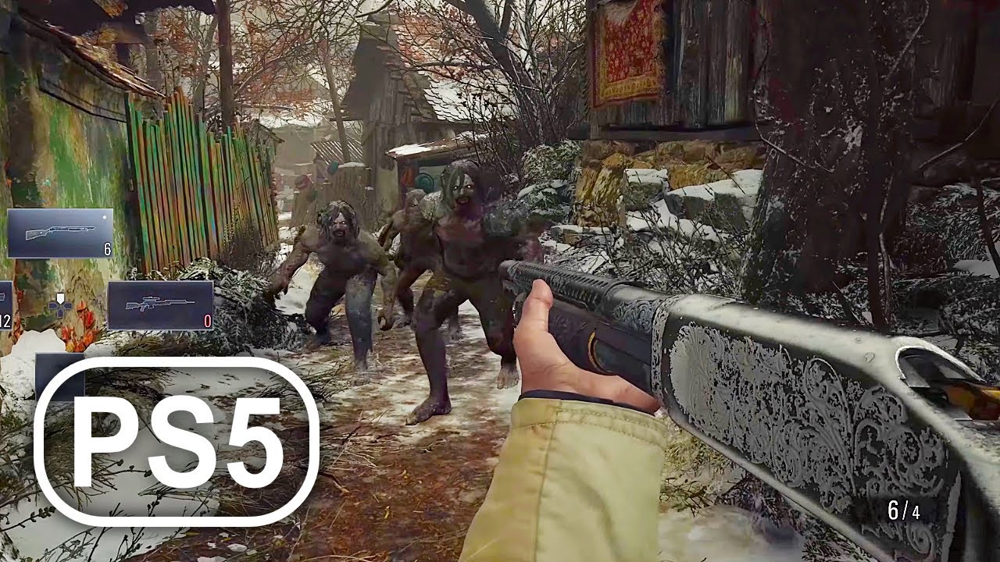

Resident Evil 8
Resident Evil 8: Village là phần thứ 8 trong series Resident Evil đình đám. Nối tiếp diễn biến câu chuyện còn đang dang dở ở phần chơi trước, Resident Evil 8: Village tiếp tục đưa người chơi theo bước anh chàng Ethan trên hành trình truy tìm con gái và điều tra nguồn gốc của sinh vật đã gây ra thảm hoạ cho gia đình của anh ở phần chơi trước.
Bối cảnh
Ba năm sau những biến cố xảy ra trong Resident Evil 7, Ethan Winters cùng vợ là Mia đã chuyển đến sinh sống tại một thị trấn nhỏ ở Châu Âu. Sau một khoảng thời gian, cả hai đã có với nhau một cô con gái có tên Rosemary. Tưởng chừng cuộc sống gia đình sẽ mãi bình yên như vậy. Nhưng không, sự bình yên đó đã kết thúc khi Chris Redfield xuất hiện bất ngờ vào một buổi tối. Không một lời giải thích, Redfield cùng người của hắn đã xả súng và giết Mia một cách vô cùng tàn nhẫn. Trong lúc Ethan vẫn còn đang chưa định hình được chuyện đang xảy ra với gia đình của mình, anh và con gái Rosemary đã bị Redfield làm cho hôn mê và đưa đi.

Sau khi tỉnh lại, Ethan phát hiện dường như đoàn xe áp giải anh đã vừa bị một vụ tai nạn cực kỳ khủng khiếp. Hai người lính áp giải Ethan đã bị một thứ gì đó hạ gục. Dựa trên những dấu vết để lại, cả hai đã bị một sinh vật nào đó tấn công vô cùng tàn nhẫn. Tuy nhiên, điều mà Ethan quan tâm lúc này chính là con gái của mình đang ở đâu? Sau khoảng thời gian tìm kiếm, Ethan đến được một ngôi làng nhỏ. Điều kỳ lạ chính là mọi người trong làng đã rời đi trước khi anh đến không lâu.
Mất một khoảng thời gian, Ethan mới gặp được một ông lão và có lẽ đây là người duy nhất còn lại ở ngôi làng. Chưa kịp hỏi bất cứ thông tin gì từ ông lão, cả hai đã bị một đám sinh vật biến dị cực kỳ hung tợn tấn công. Tuy có thể di chuyển bằng hai chân, nhưng đám sinh vật này lại có phần thân dị hợm. Tương tự như những con sói đói săn mồi, chúng điên cuồng truy đuổi tấn công Ethan và ông lão. Sau khi hạ gục ông lão, Ethan trở thành mục tiêu duy nhất bị đám người sói truy lùng. Sau khi bắt được anh, tên thủ lĩnh đã quyết định bỏ đi, và Ethan vẫn sống sót.
Sau khi đến lâu đài Dimitrescu, Ethan vô tình biết được những thông tin về vùng đất này từ một thương gia địa phương tên là The Duke cung cấp. Ethan hiện đang ở Transylvania , Romania và đây là một vùng đất bí ẩn, quanh năm lạnh giá. Nơi đây được cai quản bởi một người có tên gọi là Mẹ Miranda, một người mà người dân ở đây vô cùng tôn thờ như một vị thần.
Gần đây, Mẹ Miranda không còn giúp đỡ những người dân quanh khu vực này nữa. Bà cùng các thủ lĩnh của mình đang âm mưu thực hiện một nghi lễ bí ẩn và dường như con gái của Ethan chính là một phần trong nghi lễ đó.
Lối chơi
Dưới góc nhìn thứ nhất, người chơi trở thành Ethan Winters để thực hiện cuộc phiêu lưu khám phá ngôi làng bí ẩn tại Romania, cũng như tìm kiếm và giải cứu cô con gái Rosemary của mình.

Để giúp người chơi xác định phương hướng cũng như những việc cần thực hiện, một chuỗi các nhiệm vụ, mục tiêu lần lượt xuất hiện trong trò chơi. Người chơi cần tương tác với các nhân vật phụ để được hướng dẫn nhiệm vụ cũng như tiếp tục cuộc hành trình.
Trên hành trình thực hiện nhiệm vụ, người chơi sẽ phải đối đầu với các thử thách từ tìm người, tìm đồ vật, hạ gục mục tiêu đến đánh bại tên thủ lĩnh hùng mạnh. Người chơi có thể sử dụng các loại vũ khí khác nhau trong quá trình chiến đấu. Tuy nhiên ngoài các vũ khí cận chiến, thì các loại súng, hoặc vũ khí tấn công từ xa trong trò chơi đều được giới hạn lượng đạn nhất định. Chính vì thế người chơi cần có sự cân nhắc để sử dụng vũ khí sao cho hợp lý và hiệu quả nhất.
Bạn có thể tham khảo thêm thông tin tại đây.
Tải game
Hiện có thể tải game qua các nền tảng: Microsoft Windows(Steam), Playstation và Xbox.
Thông tin thêm
| Nhà phát triển | Capcorn. |
| Nhà phát hành | Capcorn. |
| Công Nghệ | RE Engine. |
| Nền tảng | Microsoft Windows, Playstation, Xbox. |
| Chế độ | Nhiều người chơi, một người chơi. |
| Thể loại | Kinh đị, bắn súng. |